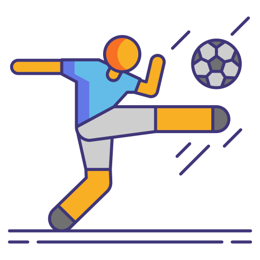
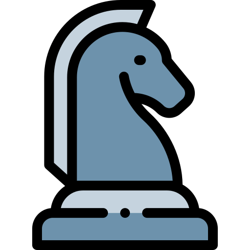
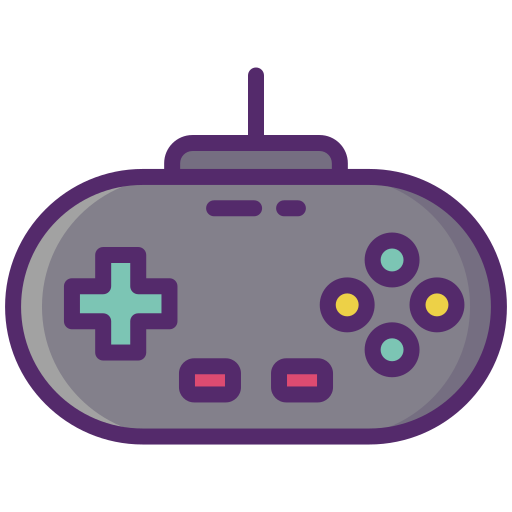
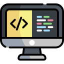

Mi nombre es Jean Carlos Jiménez Ortega , tengo 19 años y actualmente estudio Ingeniería de Sistemas en la Universidad de la Amazonia. Soy una persona dedicada y perseverante, con gran interés en el mundo de la programación y el desarrollo de software.
Hobbies
En esta sección veremos algunas de las actividades que son de mi interés. Aquí encontrarás un vistazo a cómo paso mi tiempo libre, disfrutando de cosas que me agradan. Explora los items para saber mas

Dedico algunos días de la semana a jugar fútbol en la universidad junto a mis compañeros. Esta actividad me permite desconectarme de las labores académicas, divertirme y, al mismo tiempo, mantenerme en forma.

El ajedrez es un juego que disfruto porque siempre resulta entretenido. Me gusta especialmente cuando lo juego con amigos o en pequeñas
competencias, donde cada partida se vuelve un reto divertido.

Los videojuegos en línea no son una excepción a la hora de pasar el tiempo, ya que ofrecen una forma divertida de desconectarse de la rutina. Con ellos es fácil compartir partidas con amigos,
conocer nuevas personas y disfrutar de retos que hacen cada juego diferente.

La programación competitiva me ayuda a pensar bajo presión, optimizar ideas y escribir soluciones claras.
Entreno frecuentemente en Codeforces, donde mido puedo ver progreso mi en cada competencia que se da.